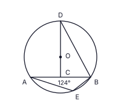
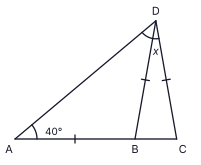
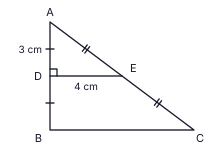
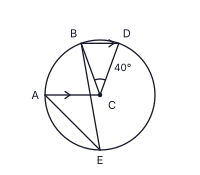
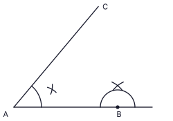

A කොටස
සියලුම ප්රශ්නවලට මෙම පත්රයේම පිළිතුරු සපයන්න. අවශ්ය අවස්ථාවල π = 22/7 ලෙස ගන්න. (එක් ප්රශ්නයකට ලකුණු 2 බැගින්, ලකුණු 50)
දුම්රිය මාර්ගයක කොටසක් අලුත්වැඩියා කිරීමට සේවකයන් 12 දෙනෙකුට දින 10ක් ගතවේ. එම වැඩය දින 6කින් නිම කිරීමට, එම වේගයෙන්ම වැඩ කරන තවත් සේවකයන් කී දෙනෙකු අවශ්ය වේද?
රූපයේ AB ∥ CD වේ. ∠AEC = 100° සහ ∠ECD = 35° නම්, ∠BAE හි විශාලත්වය සොයන්න.

සුළු කරන්න: 52x + 73x − 14x
ත්රිකෝණාකාර පාදමක් සහිත ඍජු ප්රිස්මයක මුහුණතක් ලෙස තිබිය නොහැකි චතුරස්රය පහත දැක්වෙන ඒවායින් තෝරා එහි අංකය ලියන්න.
(i) සමචතුරස්රයක් (ii) සමචතුරස්රයක් නොවන රොම්බසයක් (iii) සෘජුකෝණාස්රයක්
රූපයේ දැක්වෙන වට ප්රස්තාරයෙන් ධීවර ගමක එක් දිනක් තුළ ලබාගත් මසුන් වර්ග තුනක ප්රමාණ දැක්වේ: P – ටූනා, Q – සීර මාළු, R – ඉස්සන්. සීර මාළු ප්රමාණය කිලෝග්රෑම් 30ක් නම්, ඉස්සන් ප්රමාණය කිලෝග්රෑම්වලින් සොයන්න.

රූපයේ O කේන්ද්රය වූ වෘත්තයේ AB ජ්යායේ මධ්ය ලක්ෂ්යය C වේ. DOC සරල රේඛාවකි. ∠AEB = 124° නම්, ∠CDB හි විශාලත්වය සොයන්න.

සාධක සොයන්න: 5x2 − 45
100.8451 = 7 බව දී ඇත. lg 70 හි අගය ලියන්න.
AB යනු සිරස් පහන්කුළුණකි (A පාමුල, B මුදුන). A සමඟ එකම තිරස් මට්ටමේ C හි බෝට්ටුවක් ඇත. රූපයේ B සිට C ට අවරෝහණ කෝණය a ලෙසද, C සිට B ට ආරෝහණ කෝණය b ලෙසද ලකුණු කර, a හා b අතර සම්බන්ධතාව ලියන්න.

චාමරි කේක් එකක් පිළියෙල කරන්නේ උස එහි අරය මෙන් 6 ගුණයක් වූ සිලින්ඩරාකාර භාජනයකය. එම භාජනයේ වක්ර පෘෂ්ඨය වෙළීමට අවශ්ය කඩදාසි වර්ගඵලයත් එහි පාදම ආවරණය කිරීමට අවශ්ය කඩදාසි වර්ගඵලයත් අතර අනුපාතය සොයන්න. (අරය r හා උස h වූ සිලින්ඩරයක වක්ර පෘෂ්ඨ වර්ගඵලය 2πrh වේ.)
මුහුණත් 2, 3, 5 හා 8 ලෙස අංක කර ඇති සමතුලිත චතුස්තල දාදු කැට දෙකක් එකවර උඩ දමා, පතුලේ ඇති මුහුණත් දෙකේ ඉලක්කම්වල ඓක්යය ගනු ලැබේ. එම ඓක්යය 10 වීමේ සම්භාවිතාව සොයන්න.
රූපයේ A, B, C එක සරල රේඛාවක පිහිටයි. AB = BD = DC හා ∠BAD = 40° වේ. x හි අගය සොයන්න.

ξ = {x : x ධන නිඛිලයකි, x ≤ 10}, A = {ξ හි ප්රථමක සංඛ්යා} හා B = {ξ හි ඔත්තේ සංඛ්යා} වේ. නිවැරදි ප්රකාශයේ අංකය ලියන්න.
(i) A ∪ B = {1, 3, 5, 7} (ii) A ∩ B = {3, 5, 7} (iii) n(A ∪ B) = 7
සුළු කරන්න: (6x3y2 × 4xy3) ÷ 8x2y
ගුණෝත්තර ශ්රේඪියක දෙවන පදය −6 ද තෙවන පදය −18 ද වේ. එහි පස්වන පදය සොයන්න.
රූපයේ ABCD වෘත්ත චතුරස්රයකි. BD මගින් ∠ADC සමච්ඡේදනය වේ. AB, E දක්වා දික්කර ඇත. ∠BAC = 41° නම්, ∠CBE හි විශාලත්වය සොයන්න.

16x2y, 24xy2 හා 40x2y3 හි මහා පොදු සාධකය සොයන්න.
බේකරියක පාදමේ වර්ගඵලය cm² 3850ක් හා උස cm 12ක් වන ත්රිකෝණාකාර ප්රිස්ම හැඩැති පාන් භාජනයක් භාවිත කෙරේ. එම උසම ඇති සිලින්ඩරාකාර භාජනයකට එම පරිමාවම ධාරිතාව ඇත. සිලින්ඩරාකාර භාජනයේ අරය r සොයන්න. (π = 22/7 ලෙස ගන්න; සිලින්ඩරයක පරිමාව = πr²h.)
රූපයේ ABC ත්රිකෝණයේ AB හි මධ්ය ලක්ෂ්යය D ද AC හි මධ්ය ලක්ෂ්යය E ද වේ. ∠ADE = 90°, AD = 3 cm හා DE = 4 cm නම්, BCED ත්රපීසියමේ පරිමිතිය සොයන්න.

(2, 5) හා (4, 11) ලක්ෂ්ය හරහා යන සරල රේඛාවේ සමීකරණය සොයන්න.
රූපයේ A, D, E හරහා යන වෘත්තයේ කේන්ද්රය O වේ. ABCD සමාන්තරාස්රයකි. A, O, E, B, F එක සරල රේඛාවක පිහිටයි. ∠BCD = 70° නම්, ∠DEF හි විශාලත්වය සොයන්න.

රශ්මි වාර්ෂික 5% වැල් පොලී අනුපාතිකයට මුදලක් අවුරුදු 2ක් සඳහා තැන්පත් කළාය. දෙවන වසරේ ඇයට ලැබූ පොලිය රු. 2100ක් ද අවුරුදු 2 අවසානයේ ඇයට තිබූ මුළු මුදල රු. 44 100ක් ද නම්, ඇය තැන්පත් කළ මුදල සොයන්න.
රූපයේ කේන්ද්රය C වූ වෘත්තයේ AC ∥ BD වන අතර ∠BCD = 40° වේ. ∠AEB හි විශාලත්වය සොයන්න.

4x + 23 > 2 අසමානතාව විසඳා, එය තෘප්ත කරන x හි ඍණ නිඛිල අගයන් ලියන්න.
වෘත්තයක් AB සරල රේඛාවට B හිදී ද AC සරල රේඛාවට ද ස්පර්ශ වේ. රූපයේ නිර්මාණ රේඛා කිහිපයක් අඳින ලදී. ඒවා භාවිතයෙන් නිර්මාණය සම්පූර්ණ කර, වෘත්තයේ කේන්ද්රය O ලකුණු කරන්න.
